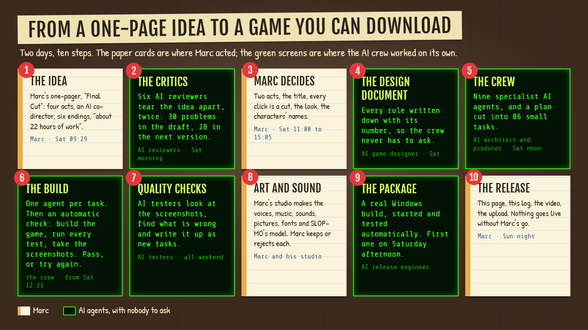
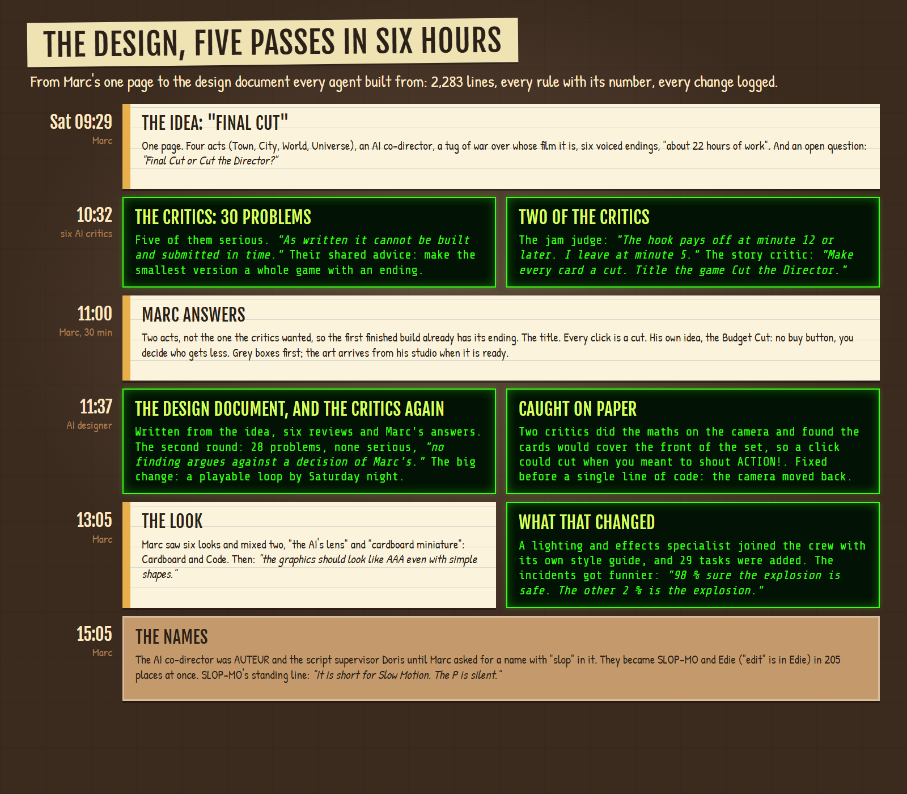
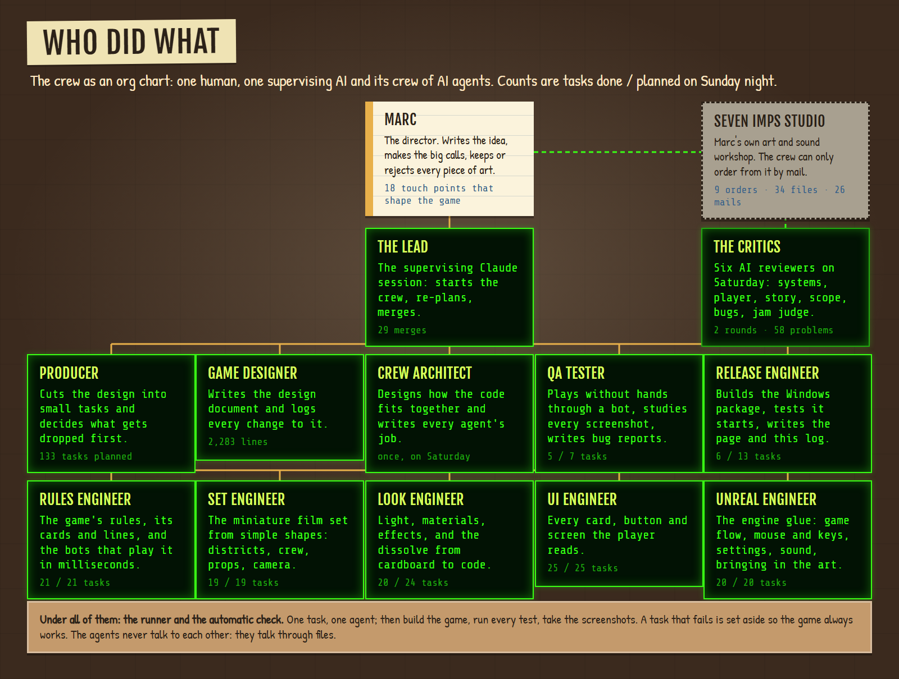
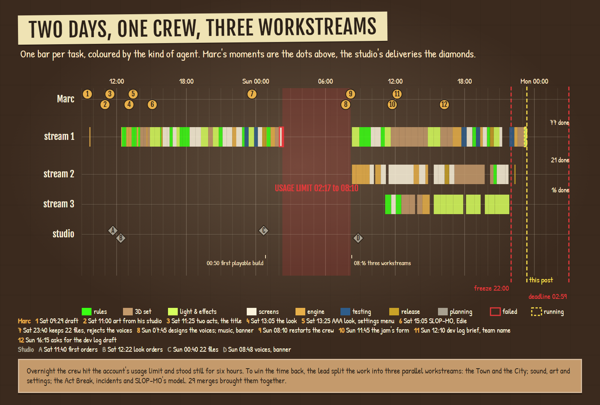
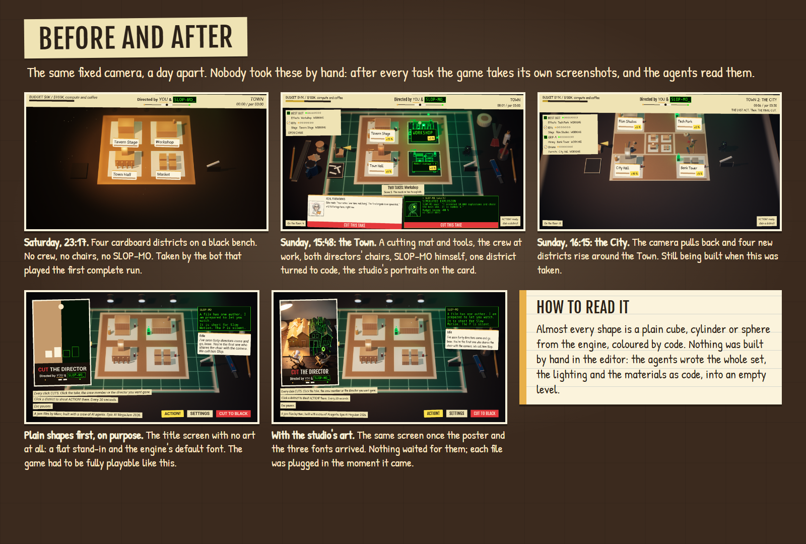
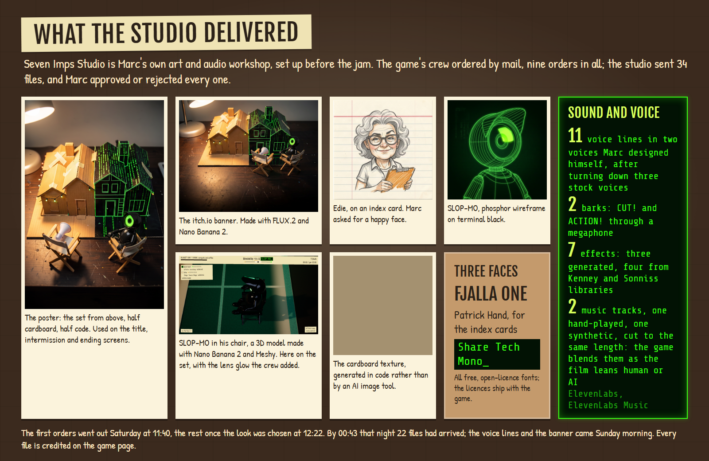
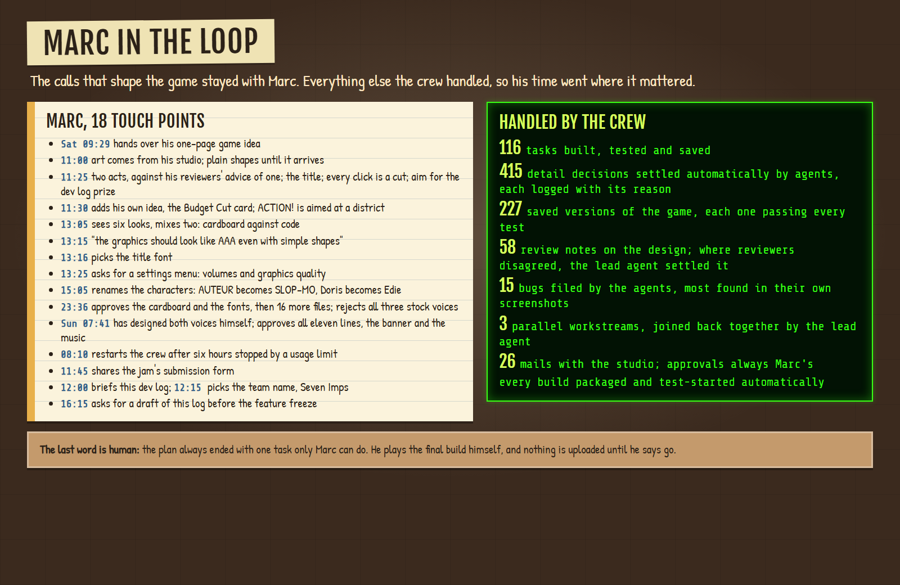
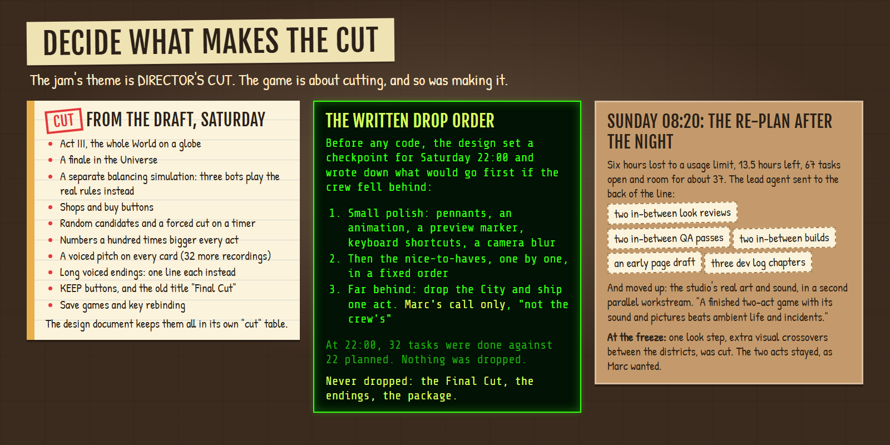
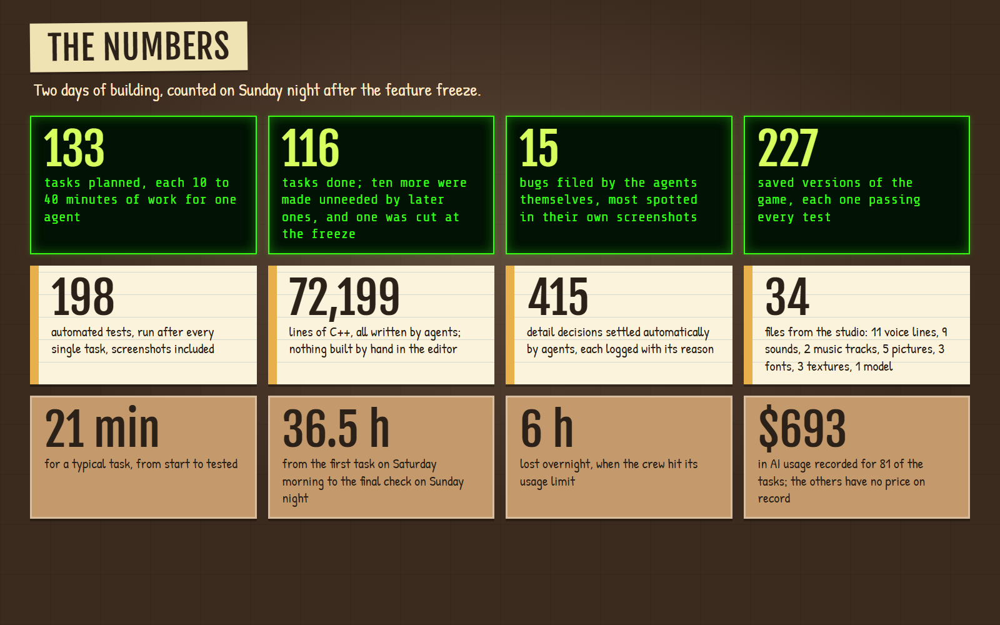

Cut the Director is a game about sharing the director's chair with an AI. Every click cuts something from the film, and in the end you cut either the AI or yourself.
It was made the same way. I'm Marc, the one human on the team. I wrote a one-page idea and made the calls. A crew of AI agents (Claude Code) wrote the design document, the plan, every line of code, the tests and this log. I decided what the game is, how it looks, what it's called and when to stop. This is the story of two days spent directing them, for the 2026 Epic AI MegaJam, theme DIRECTOR'S CUT.

Six critics tear the idea apart
My draft was called Final Cut: four acts, an AI co-director, six voiced endings. Before anyone wrote code, six reviewer agents read it on their own, each from one angle: game systems, the player's first minutes, the story, how hard it is to build, loopholes, and how a jam judge would see it.
They came back with thirty findings and one blunt verdict: this can't be finished in time, so cut it down to one small game that is complete. I answered in half an hour. Two acts, not the one they asked for, a new title, and one rule above all: every click is a cut. A designer agent turned that into the design document the crew would build from.

Hiring the crew
An architect agent then designed the game and the team to build it. The key idea: the whole game's rules live in one piece of code that needs no graphics, so tests and bots can play a full run in milliseconds. The 3D set, the menus and the sound only show what the rules decide.
It wrote nine specialist agents: one each for rules, the set, the look, the interface, QA and so on. Each owns its own part of the code. A producer agent cut the work into 86 small tasks of 10 to 40 minutes. I'm on the crew list too, with one job per milestone: play it.

Running through the night
A small runner script hands out the work. It gives the next task to one agent, with nobody to ask questions. Then it checks the result itself: build the game, run every test, have a bot play the whole thing. If the check fails, the agent tries again with the error in hand, up to three times. If it still fails, the work is set aside and the game stays the way it was when it last worked.
The first complete, playable version was packaged at 00:50 on Sunday. At 02:17 we hit the account's usage limit, and the crew stood still until 08:10. In the morning the work was split into three parallel workstreams to catch up.

Nobody watched the screen. Every feature a player sees comes with a test that sets up that moment and takes a screenshot. The QA agent and the look agent study those pictures and report what is wrong, just as a tester would.

Art and sound, by mail order
The game's crew never made a picture or a sound itself. It sent orders by mail to my asset studio, a separate workspace with the image, 3D, voice and music tools. Each order said what was needed, where the game uses it, the size, the colours and the file name.
I approved or rejected every result. I picked the fonts. I turned down all three stock voices and designed the voices of SLOP-MO (the AI co-director) and Edie (the script supervisor) myself. Meanwhile the game was always playable with grey boxes and silence. Each file was swapped in when it arrived, so nothing ever waited for art.

Keeping me in the loop
The crew ran on its own, but the calls that shape the game stayed with me. Eighteen times in two days I stepped in. I decided what the game is and how it looks, approved every picture and every voice, restarted the crew when it stopped, and said when it was done.
That only works if the small questions never reach me. When the design left a detail open, an agent picked the option that fit best, wrote one line explaining why and carried on. 415 decisions were settled that way, each one on record with its reason. That left my attention for the decisions that matter.

Deciding what makes the cut
The theme is DIRECTOR'S CUT, and the plan took it literally. The design document has its own cutting-room floor: a list of everything the first draft had that this game doesn't. It also has a written order for what to drop first if time ran short.
One fallback was mine alone to call: shipping one act instead of two. I didn't call it. At the freeze, one visual extra was cut and both acts stayed in.

The last hours
The feature freeze came at 22:00 on Sunday. Seven minutes later the QA agent finished its final pass. It looked at all 151 screenshots of the finished game and said yes: a stranger can play from the title, through both acts, to an ending and into a new run.
It also listed what was left. In the packaged game SLOP-MO's robot came out grey and white, and a pile of mess hid behind a district's flag. Both were fixed within the hour. Thirteen small cosmetic issues were noted and left alone.
A real mouse couldn't click the cards, because the tests pressed the buttons from inside the game rather than through the window. It was fixed at 23:09, and a new test now clicks through the window the way a player does.
By the numbers

- 36.5 hfrom the first task (Saturday 09:39) to the final check (Sunday 22:07); six of them lost overnight to the usage limit
- 116 / 133tasks done; ten became unnecessary because a later task covered them, one was cut at the freeze
- 21 minfor a typical task, including the automatic check
- 198automated tests, run after every task; 64 of them take screenshots or play the game
- ~72,000lines of C++ in Unreal Engine 5.8, all written by agents; nothing built by hand in the editor
- 15bugs filed, mostly by the QA agent from its own screenshots
- 415detail decisions settled automatically by agents, each logged with its reason
- 34art and sound files from 9 orders
- $693of AI usage recorded for 81 of the tasks